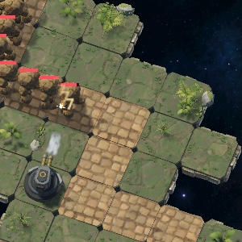
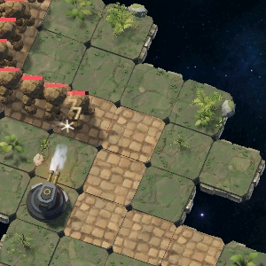

Rune Nexus · 기관총 · A안 적용 · 2026-10-11
기관총 피격 효과 비교
같은 고정 전투에서 같은 명중 한 발을 프레임마다 촬영한 실제 Godot 화면입니다. 위 줄이 기존, 아래 줄이 A안(도탄 불티) 적용 결과입니다.
기존
평면 별모양 섬광
명중 지점 위에 2D 캔버스로 대칭 6갈래 선과 흰 원을 0.28초 그립니다. 탄이 들어온 방향과 맞은 몸체와 관계없이 화면에 붙은 스티커처럼 보입니다.
A안
입체 도탄 불티
맞은 몸체 표면 앞에 백열 접점과 십자 섬광이 60ms, 불티 7개가 탄의 반대 방향과 위로 튀어 중력으로 떨어지며 90~170ms에 백색→앰버→주황으로 식습니다. 짧은 주황 표면광이 80ms 동안 몸체를 비춥니다.
같은 명중의 프레임별 비교
실제 게임 크기
확대 없이 720×1472 렌더에서 잘라낸 원래 크기입니다. 기존 별모양과 비슷한 화면 크기로 맞추되 방향이 있는 줄기로 읽히게 했습니다.
기존 · 17ms

A안 · 17ms 접점 섬광

기존 · 50ms
A안 · 50ms 불티 확산
바뀐 점과 검증
적용 범위
- 기관총 명중만 3D로 바꿨습니다. 저격 포탑의 2D 섬광과 다른 포탑 효과는 그대로입니다.
- 전투 판정·피해·충돌·저장은 바꾸지 않았습니다. 명중 표시 항목에 탄 방향과 맞은 적 ID만 추가했습니다.
- 카메라를 향하는 평면 없이 입체 메시로 그리고, 적 몸체에 가려지면 같이 가려집니다.
성능 구성
- 명중 32발 분량 고정 풀. 명중마다 자세와 시작 시각만 한 번 기록하고 불티 운동은 GPU가 계산합니다.
- 표면광은 전장 전체에서 2개를 재사용합니다. 셰이더는 스테이지 로딩 중에 미리 컴파일합니다.
- 정지·배속·되감기·새 전투에서 같은 전투 시계를 따르고 이전 불티가 남지 않습니다.
검사 결과
- PASS신규 회귀 검사 30항목. 변경 전 코드에 적용하면 실패해 결함을 잡는지 확인했습니다.
- 수정독립 검증에서 찾은 결함: 10분 넘게 이어진 전투에서 지난 불티가 다시 터지던 문제를 고치고 검사에 추가했습니다. 이웃 적에 번지던 표면광 반경도 줄였습니다.
- PASS기존 효과·캐시·로딩 준비·기관총 포구·투사체 검사 7개.
- PASS전투 런타임·고정 시계·피해 수집·세션 회귀 7개.
- 미검증Android 실기기 화면과 4배속 다중 명중 성능.